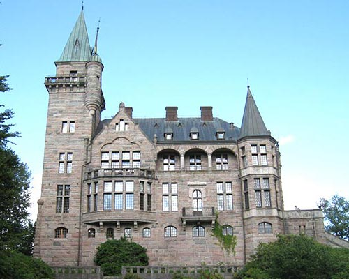
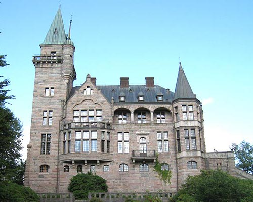

Växjö är en stad i Kronobergs län i den del av Småland som utgjorde Värend. På universitetets campus finns Teleborgs slott, som byggdes i slutet av 1800-talet och var färdig år 1900.
Växjö är en stad i Kronobergs län i den del av Småland som utgjorde Värend. På universitetets campus finns Teleborgs slott, som byggdes i slutet av 1800-talet och var färdig år 1900.
hej